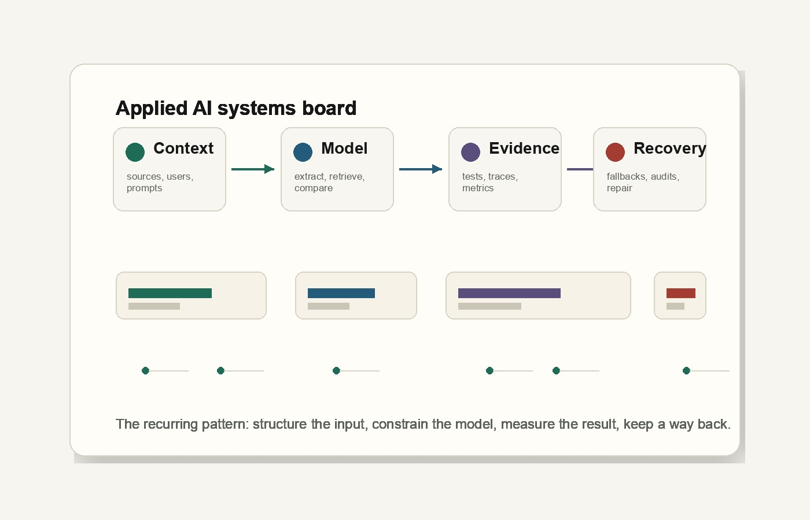
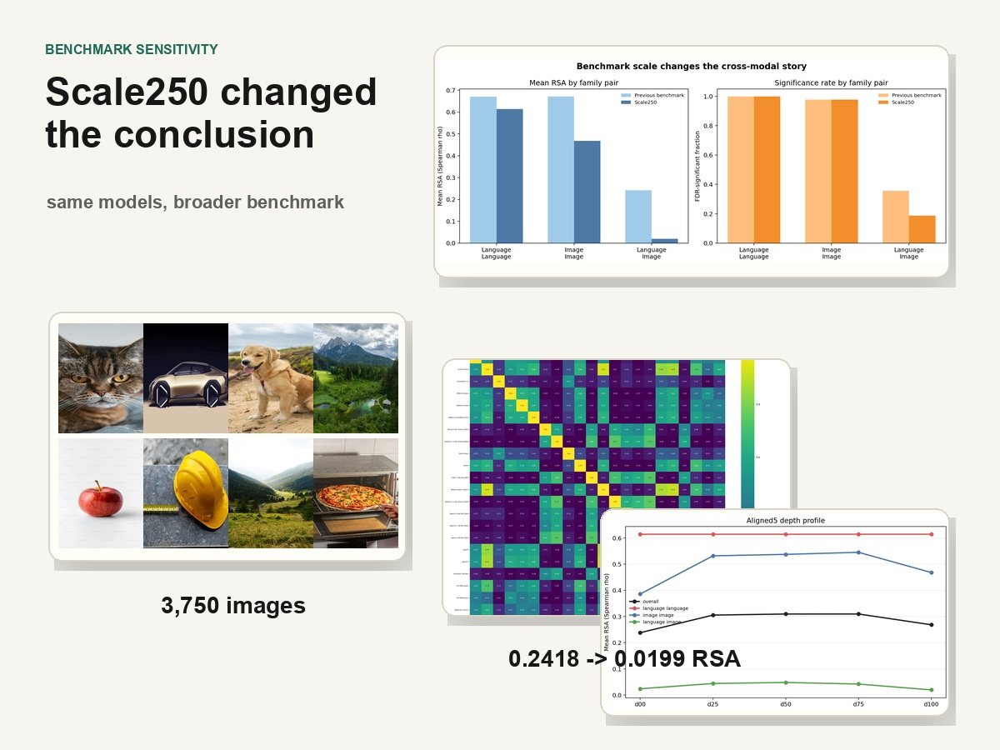

PersonalPedia
A local-first MCP interface over typed Markdown, used as working memory across long-running projects.
Applied AI engineer · Sydney, Australia
I build tool-using workflows, production AI infrastructure, and model-evaluation pipelines. My work focuses on measurable task performance, inspectable output, and a safe path through failure.

Flagship work
Each project is organized around inspectable evidence: benchmark movement, production recovery, or an experimental result that changed the conclusion.
Agent systems · civic infrastructure
A governed AI research workflow where repository rules, validators, and retrieval benchmarks constrain agent output across a public evidence system.

Independent ML research
Holding the model panel constant, expanding the benchmark from 20 to 250 concepts reduced measured language–image similarity from 0.2418 to 0.0199.

Production product engineering
A deployed AI-assisted expense product with instrumented OCR, independent circuit breakers, manual fallback, and production data-integrity repair.
How I build
The model is rarely the whole product. The consequential work is deciding what context it receives, what it may change, how output is tested, and what happens when confidence runs out.
Additional experiments
Useful explorations that support the main work but do not carry flagship claims.
A local-first MCP interface over typed Markdown, used as working memory across long-running projects.
An earlier natural-language calendar interface that introduced me to tool calling and recoverable action flows.